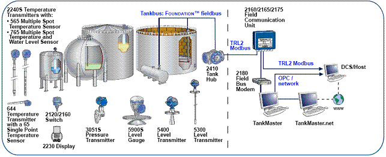

Калькулятор массы и точности
Измерительные системы измеряют уровень, температуру и гидростатическое давление нефтепродуктов в резервуаре, и на основании этих измерений, а также объема нефтепродукта, полученного из градуировочной таблицы, вычисляют массу нефтепродукта. Данный калькулятор предназначен для проверки измерений и вычислений системы, а также для вычисления точности (погрешности) этих измерений и вычислений.
Расчитать сейчас
